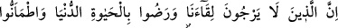
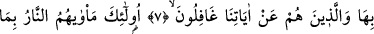
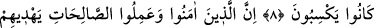
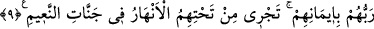
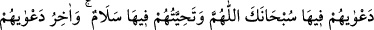
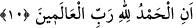

ATEŞ EHLİ-CENNET EHLİ
7. Şüphesiz bize kavuşmayı ummayan, dünya hayatına râzı olup onunla rahata
erenler ve âyetlerimizden gâfil olanlar var ya.
8. İşte onların kazandıkları şeyler sebebiyle varacakları yer ateştir.
9. İman edip iyi işler yapanlara gelince, îmânlarından dolayı Rab’leri onları
altlarından ırmaklar akan nimet dolu cennetlere iletir.
10. Onların oradaki duâları: “Allah’ım, sen her türlü eksiklikten uzaksın!”;
Birbirleriyle karşılaştıkça söyledikleri “selâm” dır. Duâlarının sonu da: “Âlemlerin
Rabb’ine hamd olsun!” sözleridir.
“Şüphesiz bize kavuşmayı ummayan…” “Biz’e kavuşmak”tan maksad, öldükten
sonra dirilmekle O’na ya da “Ben hesâbımla karşılaşacağımı sezmiştim zâten.” (el-
Hâkka, 69/20) âyetinde belirtildiği gibi hesâba kavuşmadır.
“Ummamak”tan maksad ise böyle bir şeyin olacağına inancın olmamasıdır. Bunun
peşinden ise emel ve korkunun bulunmaması gelir. Çünkü emel ve korkunun
bulunmayışı, umulan ve korkulan şeylerin vukûa gelmesine inanmamayı gerektirmez.
Yani, onlar bize dönmeyi ya da güzel bir mükâfâtla/sevabla veya kötü bir azabla
sonuçlanacak olan bizim hesabımıza kavuşmayı beklemiyorlar, demektir. Bundan dolayı
ilkini, yani bize kavuşmayı ummuyorlar. “dünya hayatına râzı olup” ifâdesiyle buna
işâret edilmektedir. Çünkü bu sözle, aşağı ve düşük olan dünyanın yüksek ve değerli
olan âhirete tercih edildiği bildirilmektedir. İkincisinden, yani bizim hesabımızla
karşılaşmaktan korkmuyorlar. “onunla rahata erenler” ifâdesiyle de buna işâret
edilmiştir. Nitekim el-İrşâd’da böyle geçmektedir.
Âhiret yerine “dünya hayatına râzı olup” az ve fânî olanı, çok ve bâkî olana tercih
ederek “onunla rahata erenler” gayretlerini dünya zevklerine ve süslerine tahsis
ederek onda huzur bulanlar veya ondan rahatsızlık duymayan kimsenin sükûnetiyle onda,